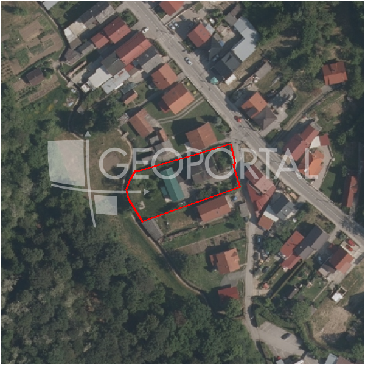

#3830 · GRAĐEVINSKO ZEMLJIŠTE PRODAJEMO
Štefanovec, Podsljeme, Grad Zagreb · zemljiste · njuskalo · status active · oglas ↗
Ocjena
- Score
- 60 rule 60 · LLM – · 12.09.2026.
- RLV
- 638.000 € (421 €/m²) · ratio 4,91
- Ukupna investicija
- 4,39 M€
- GBP
- 2.083 m²
- Feedback
- –
- CRM
- –
Oglas
- Cijena
- 130.000 € (75 €/m²)
- Površina
- 1.735 m² · DKP 1.515 m² (odstupanje -12,7 %)
- Prodavatelj
- agencija · Sollers Nekretnine
- Prvi put
- 11.09.2026. · zadnje 11.09.2026. · 0 d na tržištu
Povijest cijene
| Datum | Cijena |
|---|---|
| 11.09.2026. | 130.000 € |
Flagovi
zgrade_bez_rusenja zgrade na čestici bez spomena rušenja (−10)zone_uncertainty zona nije pregledana (reviewed: false) (−5)
djelomicno_gradivo djelomicno_gradivo
llm_pending LLM ekstrakcija/ocjena nedostupna
Komponente score-a
| rlv | {'gbp': 2083.46985, 'kis': 1.5, 'nkp': 1708.4452769999998, 'noi': None, 'rlv': 637728.3805300433, 'ratio': 4.905602927154179, 'value': None, 'phases': 1, 'profile': 'zagreb_visestambeno', 'gdv_neto': 5877051.75288, 'cost_soft': 137509.0101, 'gdv_bruto': 7346314.6910999995, 'kis_known': True, 'total_inv': 4390161.96385, 'cost_build': 3437725.2525, 'cost_other': 677127.7012499999, 'cost_sales': 220389.44073299997, 'demolition': False, 'gbp_source': 'kis', 'rlv_per_m2': 421.0261969565216, 'parcel_area': 1514.7, 'parcelation': False, 'roi_on_cost': 0.28848601913227107, 'profit_at_ask': 1266500.3482969997, 'cost_demolition': 0.0, 'total_inv_phase': 4390161.96385, 'parcel_area_effective': 1388.9799, 'sale_price_per_m2_nkp': 4300.0} |
| hard | [] |
| info | ['djelomicno_gradivo', 'llm_pending'] |
| rubric | {'permits': {'max': 5.0, 'detail': {'permit': 'none'}, 'points': 0.0}, 'location': {'max': 15.0, 'detail': {'source': 'benchmark:seed:Podsljeme', 'sale_price_per_m2_nkp': 4300.0}, 'points': 5.62}, 'physical': {'max': 4.0, 'detail': {'slope_pct': 9.97, 'road_access': 'yes', 'slope_points': 2.0}, 'points': 4.0}, 'liquidity': {'max': 3.0, 'detail': {'n_cuts': 0, 'points_cut': 0.0, 'points_days': 0.008333333333333333, 'seller_type': 'agencija', 'points_fresh': 0.5, 'price_cut_pct': None, 'days_on_market': 1, 'points_private': 0}, 'points': 0.51}, 'rlv_ratio': {'max': 25.0, 'detail': {'rlv': 637728, 'ratio': 4.906, 'asking_price': 130000.0}, 'points': 25.0}, 'ticket_fit': {'max': 10.0, 'detail': {'asking_price': 130000.0}, 'points': 3.73}, 'zone_quality': {'max': 8.0, 'detail': {'no_upu': True, 'source': 'gis', 'zone_class': 'mjesovito_pretezito_stambeno', 'zone_ideal': True, 'gp_uredjeni': True}, 'points': 6.0}, 'profit_potential': {'max': 20.0, 'detail': {'roi_on_cost': 0.288, 'profit_at_ask': 1266500}, 'points': 20.0}, 'price_vs_benchmark': {'max': 10.0, 'detail': {'source': 'auto:Podsljeme', 'deviation': 0.532, 'ask_eur_m2': 75, 'benchmark_eur_m2': 160.0}, 'points': 10.0}} |
| weights | {'llm': 0.4, 'rule': 0.6, 'model': 0.0} |
| penalties | {'zone_uncertainty': 5, 'zgrade_bez_rusenja': 10} |
| raw_score | 74,9 |
| rlv_notes | ['gradivo 92 % čestice (1389 m²) — ostatak izvan gradive zone'] |
| flag_notes | {'max_gbp': 2083, 'total_inv': 4390162, 'zone_code': 'M1', 'zone_class': 'mjesovito_pretezito_stambeno', 'zone_source': 'gis', 'zone_reviewed': False, 'commercial_pct': 0.0, 'buildings_share': 0.196, 'commercial_source': 'zone_rule'} |
| caps_applied | [] |
GIS
- Čestica
- k.o. 335347, k.č. 14633 (pin_buffer, 0,79); k.o. 335347, k.č. 14733/2 (pin_buffer, 0,79); k.o. 335347, k.č. 14809/1 (pin_buffer, 0,78)
- Zona
- M1 (mjesovito_pretezito_stambeno) · NIJE pregledana
- kig / kis / katnost
- 0,40 / 1,50 / Po+P+3+Pk
- GP / UPU
- uredjeni · UPU ne
- Pristup / nagib
- yes · 10,0 % (max 36,2 %)
- More
- –
- Zaštite
- Natura ne · zaštićeno ne · kulturno dobro ne
- Zgrade na čestici
- 20 %
- Match
- 0,79
Karta
Ortofoto (DOF)

RLV kalkulacija — pretpostavke
| gbp | {'value': 2083.46985, 'source': 'kis'} |
| kis | {'value': 1.5, 'source': 'gis'} |
| soft_pct | {'value': 0.04, 'source': 'profil'} |
| nkp_ratio | {'value': 0.82, 'source': 'profil'} |
| cost_other | {'value': 677127.7012499999, 'source': 'profil: doprinosi+uređenje po m² GBP, financiranje+rezerva % gradnje'} |
| zone_share | {'value': 0.917, 'source': 'gis'} |
| parcel_area | {'value': 1514.7, 'source': 'dkp'} |
| asking_price | {'value': 130000.0, 'source': 'oglas'} |
| margin_on_cost | {'value': 0.15, 'source': 'profil'} |
| build_cost_per_m2_gbp | {'value': 1650.0, 'source': 'profil'} |
| sale_price_per_m2_nkp | {'value': 4300.0, 'source': 'benchmark:seed:Podsljeme'} |
| transfer_tax_and_acquisition | {'value': 0.06, 'source': 'profil'} |
Ekstrakcija iz oglasa
| access_road | yes |
| parcel_count | 2 |
| slope_mention | nagib |
Opis oglasa
Građevinsko zemljište ukupne površine površine 1735m2 ( Štefanovec)- inaće u stvarnosti 2 parcele uz glavnu cestu prodajemo. Zemljište se nalazi u zoni mješovite gradnje. Moguća gradnja 2 dvojne kuće sa po tri stana – svaka do 300m2. Teren je u padu prema cesti. Orijentacija jugozapad. Infrastruktura uz glavnu cestu. Uredna dokumentacija